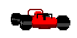

<canvas id="canvas" width="300" height="150"></canvas>





<script type="text/javascript">
  var canv = document.getElementById('canvas')
  var screen_height = canv.height
  var screen_width = canv.width
  var ctx = canv.getContext('2d');
  var carPos = 0
  var carimage = [document.getElementById("carimage1"),document.getElementById("carimage2"),
  document.getElementById("left1"),document.getElementById("left2"),
  document.getElementById("right1"),document.getElementById("right2"),
]
  var carwidth = 128
  var carheight = carwidth/2
  var keydown = "none"
  var distance = 0
  var elapsedTime = 0
  var curvature = 0
  var carspeed = 0
  var playercurvature=0
  var trackcurvature=0
  var maxspeed = 100
  var clipmax = 70
  var currmax = maxspeed
  var totalTime = 0
  var imgnumber = 0
  var imageindex = 0
  var wheellength = 5
  ctx.clearRect(0, 0, screen_width, screen_height);

  let fps = 30
  let loop
  
  function DrawPixel(x, y, color) {
    ctx.fillStyle= color
    ctx.fillRect(x, y, x + 1, y + 1)
  }

var pressedKeys = {};
window.onkeyup = function(e) { pressedKeys[e.keyCode] = false; }
window.onkeydown = function(e) { pressedKeys[e.keyCode] = true; }


var track = [ //length , curve
  [10 , 0],
  [200 , 0],
  [200 , 0.50],
  [200 , 0.0],
  [50 , -3],
  [300 , -0.2],
  [300 , 0.5],
  [75 , 3],
  [75 , -3],
  [200 , 0]

]
var tracklength = 0
for (let t  = 0; t < track.length; t ++)
  tracklength += track[t][0]
window.onload = function (){
  loop = setInterval(()=>{
    
    elapsedTime = (1000/fps)/1000
    totalTime += elapsedTime
    


    //input capture
     //right
     if (pressedKeys[39]){
      playercurvature+=0.7*elapsedTime
      imageindex = 4
     }
    else if (pressedKeys[37]){
      playercurvature-=0.7*elapsedTime
      imageindex = 2
    }
    else{
      imageindex = 0
    }
    console.log(Math.abs(playercurvature-trackcurvature))
    console.log(carspeed)
    if(Math.abs(playercurvature-trackcurvature)>0.8)//on grass
      {carspeed -= 5 * elapsedTime
      currmax = clipmax}
    else if(Math.abs(playercurvature-trackcurvature)>0.5)//on grass
      {carspeed -= 1 * elapsedTime

      currmax = clipmax}
    else{
      currmax = maxspeed
    }
    //left

    //up
    if (pressedKeys[38]){

      carspeed += 2 * elapsedTime
    }
    else{
      carspeed -= 1* elapsedTime
    }
    if (carspeed > 1)
    carspeed = 1
    if (carspeed <0)
    carspeed = 0
    distance_this_frame = (currmax * carspeed) * elapsedTime
    distance += distance_this_frame
    wheellength-=distance_this_frame
    if (wheellength < 0)
    {
      wheellength = 5
      imgnumber = imgnumber == 1 ? 0 : 1
    } 
   if (distance>=tracklength)
   distance-=tracklength
    var trackOffset = 0
    var trackSection =0
    
    while(trackSection<track.length && trackOffset<=distance)
      {
        trackOffset+= track[trackSection][0]
        trackSection++
        
      }
    
    targetCurve = track[trackSection-1][1]
    trackcurvediff = (targetCurve-curvature)*elapsedTime*carspeed
    curvature+=trackcurvediff
    trackcurvature += curvature * elapsedTime * carspeed 
    DrawScreen()


  }, 1000/fps)
}
  function DrawScreen() {
    

    horizon = screen_height / 2

    for (let y = 0; y < horizon; y++) {
      for (let x = 0; x < screen_width; x++) {
        if(y > horizon/2){
          DrawPixel(x, y,'navy')
        }else{
          DrawPixel(x, y,'mediumblue')
  
        }
      }}

      for (let x = 0; x < screen_width; x++) {
      var hillheight = Math.abs(Math.sin(x * 0.001 + trackcurvature) * 32)
      for (let y = horizon - hillheight; y < horizon; y++) {
        DrawPixel(x, y,'darkgoldenrod')

      }
      }
    for (let y = 0; y < horizon; y++) {
      for (let x = 0; x < screen_width; x++) {

      var perspective = y / horizon
      var middlePoint = 0.5 + curvature * Math.pow(1-perspective,3)
      var roadwidth = 0.1 + 0.8 * perspective
      var clipwidth = roadwidth * 0.15
      roadwidth /= 2
      leftGrasswidth = (middlePoint - roadwidth - clipwidth) * screen_width
      leftClipwidth = (middlePoint - roadwidth) * screen_width

      rightGrasswidth = (middlePoint + roadwidth + clipwidth) * screen_width
      rightClipwidth = (middlePoint + roadwidth) * screen_width

      row = screen_height / 2 + y

      var grasscolour = Math.sin(20 * Math.pow(1 - perspective,3) + distance*0.1) > 0 ? 'limegreen' : 'lime'
      var clipcolour = Math.sin(80 * Math.pow(1 - perspective,2) + distance) > 0 ? 'red' : 'white'

      if (x >= 0 && x < leftGrasswidth)
        DrawPixel(x, row,grasscolour)
      if (x >= leftGrasswidth && x < leftClipwidth)
        DrawPixel(x, row, clipcolour)

      if (x >= leftClipwidth && x < rightClipwidth)
        DrawPixel(x, row, "grey")

      if (x >= rightClipwidth && x < rightGrasswidth)
        DrawPixel(x, row, clipcolour)

      if (x >= rightGrasswidth)
        DrawPixel(x, row, grasscolour)

    }

    carPos = playercurvature-trackcurvature
    var dCarPos = screen_width/2 +  (screen_width * carPos)/2 -(carwidth/2)
    ctx.drawImage(carimage[imageindex + imgnumber],dCarPos,.7 * screen_height, carwidth,carheight)
  }

  }
  function Update() {


  }
  

</script>